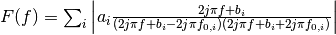

fitting.sinusoidsFT¶
-
fitting.sinusoidsFT(f, *p)¶ Returns reconstructed frequency domain representation from analytic Fourier transform of one sided decaying sinusoid for a variable number of sinusoids.
Parameters: - f (array) – frequency axis in units corresponding to the time axis.
- p (variable) –
Coefficients of sinusoids. For each term provide
- a amplitude,
- b exponential decay rate ( = 1 / decay time),
- f0 oscillation frequency (rad),
- phi phase (rad).
Returns: , where j is the imaginary unit.
Note
The phase of the sinusoids is actually not used, however, it is included in the parameter list to provide consistency with
sinusoids().See also
This function is intended for use with
lpsvd().